Happy Valentine's day sweety!
Every February 14th, candy, flowers, and gifts are exchanged between loved ones, all in the name of St. Valentine. But who is this mysterious saint and why do we celebrate this holiday?
It all began in Rome, when the Emperor, Claudius II, was involved in many bloody and unpopular campaigns. “Claudius the Cruel” as he was called, was having a difficult time getting soldiers to join his military leagues. He believed that the reason was that Roman men did not want to leave their loves or families. So, he cancelled all marriages and engagements in Rome!
The good Saint Valentine, who was a priest in Rome, in the year 269 A.D., together with his friend Saint Marius, defied Claudius and continued to perform marriages for young lovers in secret. When Valentine's actions were discovered, he was sentenced to be beaten to death with clubs and to have his head cut off.
But while in prison, it is believed that Valentine fell in love with a young girl, who may have been his jailor's daughter, who visited him during his confinement. Before his death on the 14th day of February, it is alleged that he wrote her a letter, which he signed
"From your Valentine"
Nufinka
Nufik
=
Lucky Ones!
And one more..
Our story:
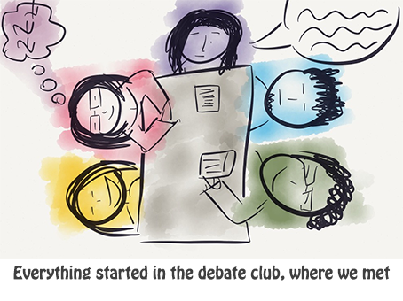 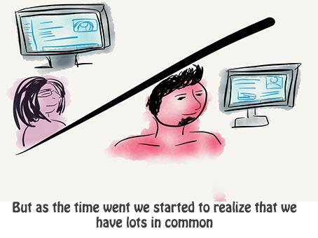 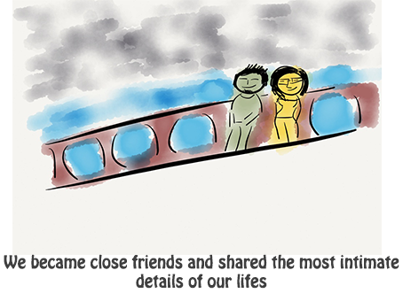 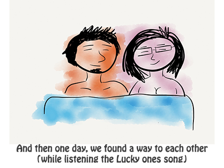 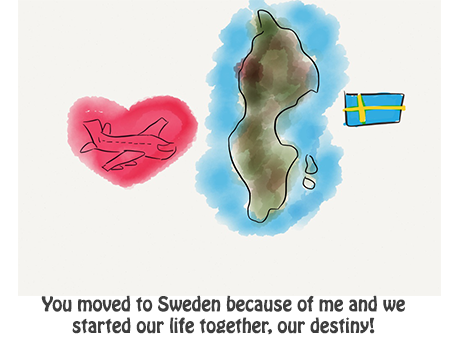 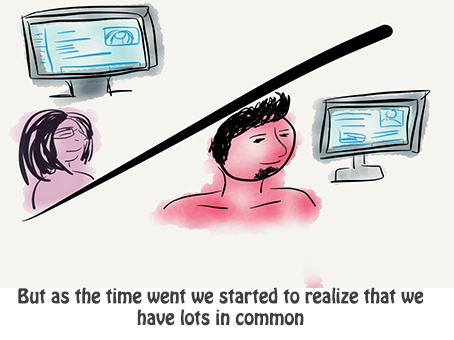
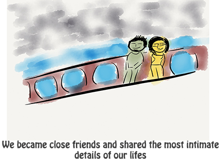
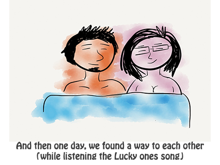
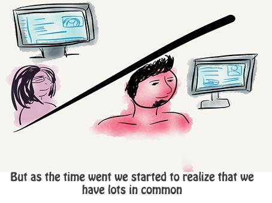
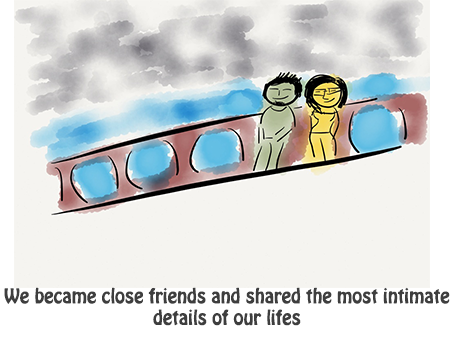
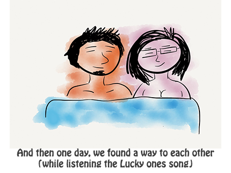
 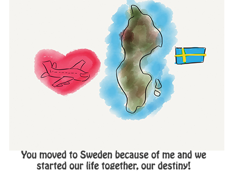
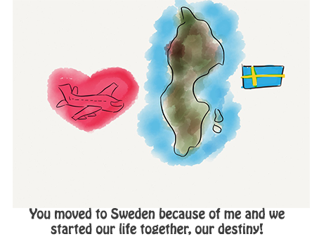

Cute love pictures


What turns me on?
- You wearing a shirt
- Your strong arms
- Your self-confident, sexy look
- When you tell me that you need to cuddle
- When you speak English
- When you are lying behind me and I feel you are getting hard
- When you grab my waist or hips
- When you look me in my eyes
- When you play with my nipples
- When you say something dirty at loud
- When you smell nice
- Possibility of being watched
- Your perfect butt
- When you do me hard
- When you type on the computer or do other super sexy IT stuff
- You being smart
- When you notice other girl looked at you and you are happy
- When you cook and take care of me
- Your delicious soft lips
- When you say "I will explain it to you"
- When I can lie on your arm
- When you are with someone else on skype and have very tough sexy deep voice
- When you write half czech half english
- Black boxers
- You when you are shaved and have a hair gel
- Your sensitive, cute you
Listology aka lists of our love
You can read the lists which I made and if you feel up to, you can create your own. Double click on item to delete it. Do not forget to sort your list according to importance!
List of things I love about you:
- Tendency not to settle with an average outcome
- Kind nature and moral standards
- Strong character and self-confidence
- Optimism, willingness to learn and become better person
- Hair - You have the best hair I have ever seen on a man
- Look and gestures
- Creativity and ability to make me laugh
- Sex abilities
- Loving and sharing heart
- Humbleness to admit a mistake or to ask for help
- Passion about everything you do
- Commitment and courage in your actions and decisions
- Ability to make me feel like I am the only girl in the world
- Gentleman behaviour
List of things you love about me:
Things we have in common:
- Coding!
- Playing playstation games
- Geek tv series and movies
- Attitudes to work, love and life
- Loving modern hi-tec things and apple family
- Loving good notes, papers and pens
- Determinaton to become best at something and to have a great life
- Pizza, french fries, hamburgers, philadelphia, ...
- Learning new stuff
- Loving handy productive applications
- Sleeping
- Eating while watching an episode of Grey's Anatomy
- "Babatkovani"
- Creative games and puzzles
- Opening new jar of peanut butter
- Staying up late
- Cuddling before falling asleep
- Books
- Covey, Ferriss, Fried,..
- English language and keyboard
- Loving Swedish way of life
- Enthusiasm with new ideas
- Difficult making new friends
- Cold feet in our apartment
- Favourite word "nuf"
- Our love!
Important moments:
- When we kissed at the Cinema party
- When we made love for the first time during Horror party
- When we started to become exclusive at the tram stop Kublov
- When we started to go hand by hand
- When we became a couple on the roof
- When we said "I love you" for the first time at Kuba's place
- When we started to talk about Sweden and first cried about that
- when you stopped being afraid and admit our relationship on FB and with your family
- When I went to Italy for a week and we realized we can not be without each other even a day
- When I got on a bus to Sweden and you were there to say goodbye
- When you first came to visit me and we spent all weekend in bed
- When you were sick and I took care of you whole week
- When we say "forever" for the first time
- When we started to talk about you moving there
- When tou had your first (and second and third) interview with Saltside
- When you came with a huge luggage
- When we found our future apartment
- When I met your family and come to visit you at Prague
- When we started to think about life long commitments like a tattoo